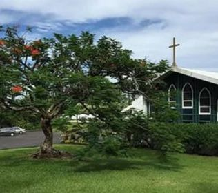
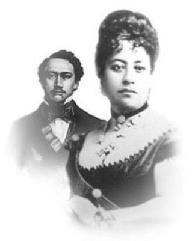
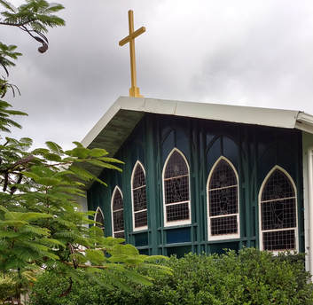
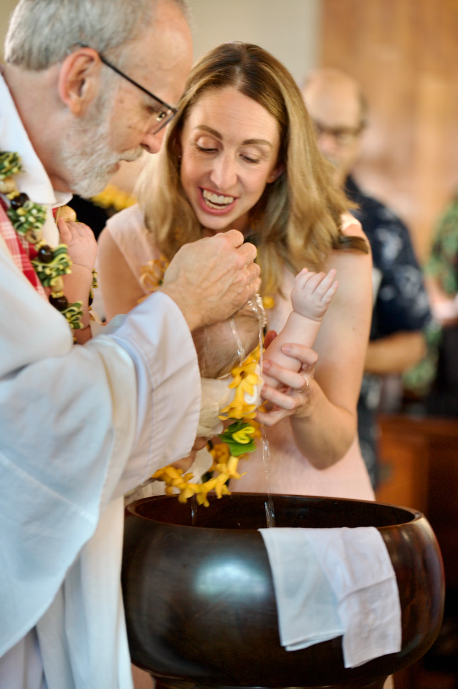
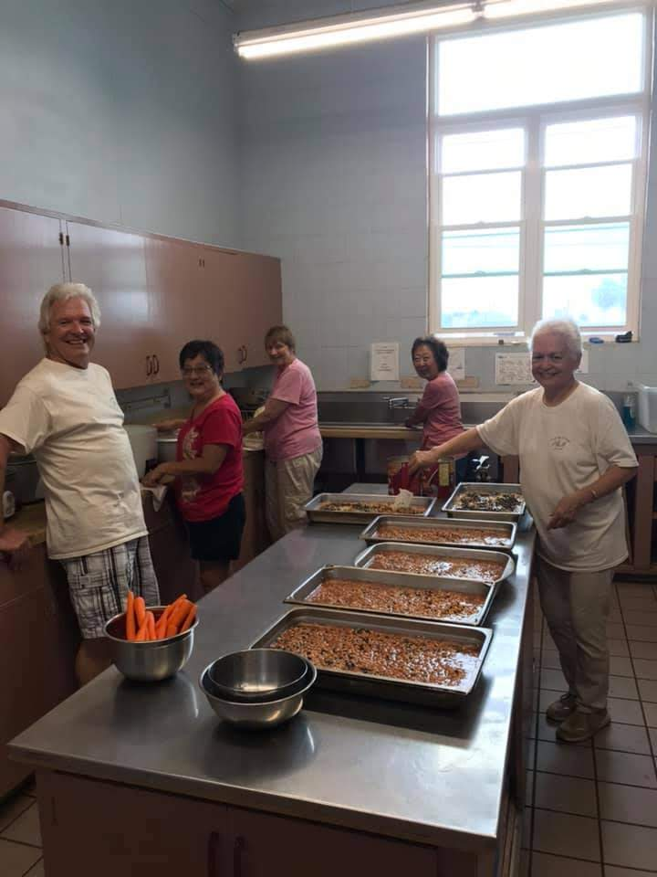
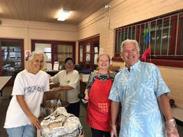
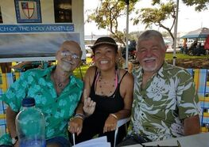
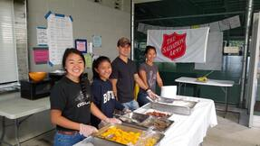
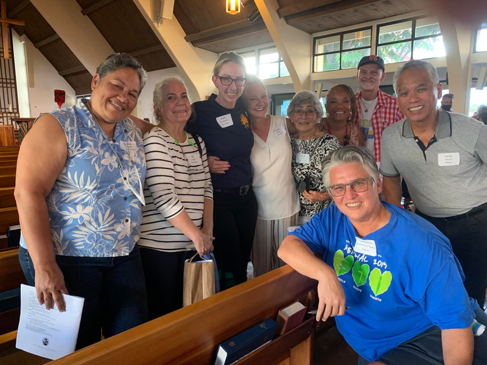
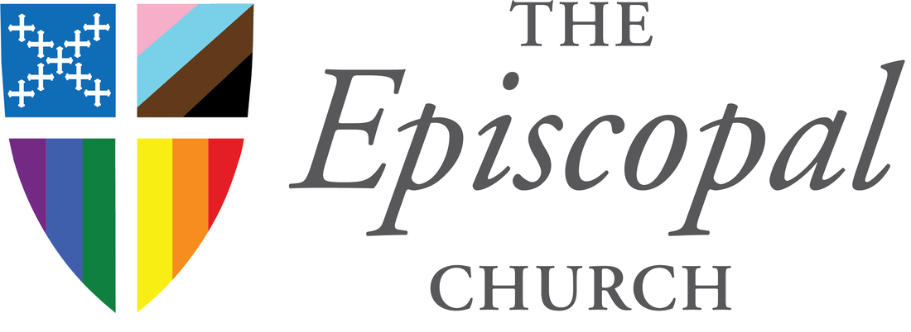

Founded in 1903 on Faith, Love,
& The Pennies of Children
Church of the Holy Apostles is the only Episcopal parish in Hilo, Hawaiʻi. A historic sanctuary rooted in royal Hawaiian history and continuous community care.

Est. 1903A Gift of Grateful Love
Our mission was founded in 1903 with loving funding from Holy Apostles church in Philadelphia, Pennsylvania—much of it raised by Sunday School children who donated their pennies. In enduring gratitude for their assistance, our parish proudly took their name.

1862King Kamehameha IV & Queen Emma
The Episcopal Church in Hawaiʻi was invited by King Kamehameha IV and Queen Emma in 1862. The royal family supported church missions across the islands. Queen Liliʻuokalani depended upon the spiritual comfort of the Episcopal Church following the 1893 overthrow.

1963Kapiʻolani Campus & Stained Glass
Originally built on Waiānuenue Avenue, our parish relocated in 1963 to our present peaceful location across from the University of Hawaiʻi at Hilo. We lovingly brought with us the original stained-glass windows that continue to illuminate our worship sanctuary today.
The parish has over 130 families. In addition to holding regular worship, we endeavor to reach out to the community of Hilo to change lives and create a better, more peaceful world. We are committed to social justice, and known for being an open and affirming community.
Worship Times & Weekly Gatherings
Sunday Eucharist & Lanai Life
Our liturgy combines traditional Episcopal elegance with heartfelt Hawaiian hymns and prayers. Come as you are—casual attire and slippers are always welcome!
Holy Eucharist Rite II
A peaceful, spoken Eucharist service without music. An intimate morning worship with scripture, reflection, and quiet communion.
- Spoken Word & Sermon
- Holy Communion Rite II
- In-Person in Sanctuary
Holy Eucharist Rite II with Choir
Our vibrant main service featuring choral anthems, organ and instrumental music, prayers in English and ʻŌlelo Hawaiʻi, followed by Aloha fellowship.
- Sacred Choral Anthems & Hymns
- English & Hawaiian Language Prayers
- Aloha Coffee Hour with Fresh Bread & Leis
Combined Holy Eucharist II at 9:00 AM
On the third Sunday of each month, both early and late congregations gather together for a single unified 9:00 AM service, followed by a delicious parish potluck on the lanai!
Centering Prayer
Contemplative silent prayer rooted in Christian tradition, with Contemplative Outreach Hawaii.
Overeaters & AA Step-Sisters
Overeaters Anonymous in the back building (3:00 PM); Step-Sisters Women's AA on the Lanai (6:30 PM).
Choir Rehearsal & Music
Choral anthems, organ preludes, and Hawaiian liturgical hymns. All voices are welcome.
Lanai Zumba & Outreach Dinners
Zumba with Dee on the outdoor lanai. On 3rd Thursdays: Monthly Peanut Butter Outreach dinner prep.
Narcotics Anonymous (NA)
A supportive, safe weekly recovery meeting held on the open-air church lanai.
Connect with Holy Apostles on Facebook
View our weekly service videos, community announcements, photos of parish life, and parish profile updates on our official Facebook page @churchoftheholyapostleshilo.

Walk The Sacred Labyrinth
A Path of Healing & Peace
Church of the Holy Apostles is blessed to have a permanent prayer labyrinth on our church grounds in Hilo that is open freely to everyone, 7 days a week from sunrise to sunset.
Unlike a maze, which has deceptive dead ends, a labyrinth has a single unicursal path leading gently to the center and back out again. You cannot get lost. It is a 3,500-year-old sacred tool for quiet reflection, meditation, and spiritual renewal.
Our Ministries & Community Outreach
Love, Care & Service in Hilo
Faith is lived through compassionate action. Explore how our parishioners serve our island neighbors with open hearts and hands.

The Peanut Butter Ministry
On the third Thursday of each month, our volunteer team prepares hearty meals in the afternoon and serves dinner at the Methodist Church on Waiānuenue Avenue for community members in need.

Parish Life & Lanai Fellowship
From post-service coffee hours with fresh warm bread to monthly potlucks, our open-air lanai is where friends become family and all newcomers are warmly embraced with leis.

3rd Sunday Aloha Potlucks
Following our combined 9:00 AM service on third Sundays, our parish shares dishes, laughter, and fellowship. A cherished island tradition celebrating gratitude and community.

Youth & Kupuna Support
Engaging youth programs, Camp Mokulēʻia events, and Meals on Wheels care bags prepared for homebound elders (kupuna), ensuring no one in our community feels alone.

Liturgical & Vestry Leadership
Dedicated lay leaders, Altar Guild, Choir musicians, and Diocesan Delegates representing Holy Apostles at the annual Episcopal Diocese of Hawaiʻi meeting.

Lanai Zumba & Support Groups
Opening our campus for health and healing: Thursday Zumba with Dee, Overeaters Anonymous, Step-Sisters AA, and Saturday Narcotics Anonymous meetings.
We Would Love To Welcome You
To Holy Apostles in Hilo
Located conveniently across from the University of Hawaiʻi at Hilo on Kapiʻolani Street.
Church Sanctuary & Campus
1407 Kapiʻolani Street, Hilo, HI 96720
(Directly across from UH Hilo)
Phone
Office hours: Tuesday – Friday 9:00 AM – 1:00 PMParish Office Email
For prayer requests, pastoral care, and inquiriesFacebook Page
Follow us for weekly photos, messages, and parish newsSend Us A Message or Prayer Request
Whether you are visiting Hilo, planning to join Sunday worship, or would like prayer, our ʻohana is here for you.